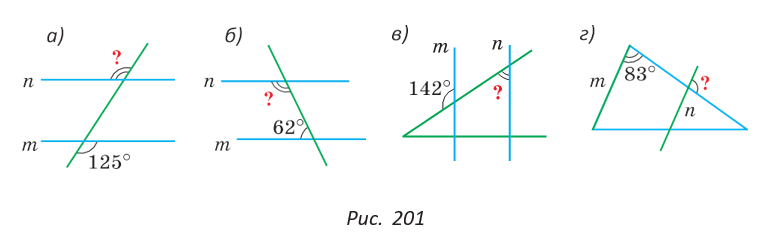
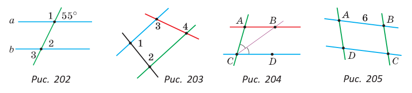
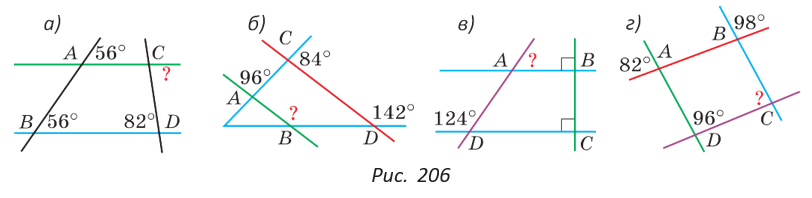
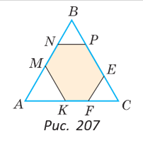
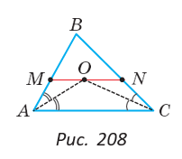
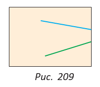
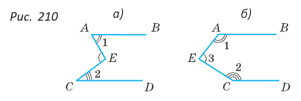

Задания к § 17
145. На рисунке 201 m || n. Найдите угол, обозначенный знаком вопроса.

146. На рисунке 202 a || b. Найдите сумму ∠ 1 + ∠ 2 + ∠ 3.

147. На рисунке 203 ∠ 1 + ∠ 2 = 180°, ∠ 3 + ∠ 4 = 240°. Найдите угол 4.
148. На рисунке 204 AB || CD, CB — биссектриса угла ACD, AC = 14 см, BC = 22 см. Найдите периметр треугольника ABC.
149. На рисунке 205 AB || DC, AD || BC, AB = 6 см, периметр четырехугольника ABCD равен 20 см. Найдите длину отрезка AD.
150. Внутренние односторонние углы при двух параллельных прямых и секущей относятся как 2 : 3. Найдите больший из этих углов.
151. Один из внутренних односторонних углов при двух параллельных прямых и секущей на 40° меньше другого. Найдите меньший из этих углов.
152. В треугольнике ABC провели биссектрису BK, а из вершины С — прямую, параллельную BK, которая пересекает продолжение стороны AB в точке E. Докажите, что треугольник BEC — равнобедренный.
153. Докажите, что если у четырехугольника ABCD AB = CD, AB || CD, то BC || AD.
154. Найдите угол, обозначенный знаком вопроса (рис. 206).

155. На биссектрисе угла ABC взята точка K, на стороне BC — точка M такая, что KM || AB, ∠ BKM = 36°. Найдите угол CMK.
156. Концы отрезка AB лежат на параллельных прямых a и b. Точка O — середина отрезка AB. Докажите, что любой другой отрезок с концами на прямых a и b, проходящий через точку O, делится ею пополам.
157. Докажите, что прямая, которая пересекает боковую сторону равнобедренного треугольника и параллельна его основанию, отсекает от него равнобедренный треугольник.
|
 |
158. На рисунке 207 △ABC — равносторонний с периметром 36 см, MK || BC, NP || AC, EF || AB и KM + MN + NP = PE + EF + FK. Найдите периметр шестиугольника KMNPEF. |
|
 |
159*. На рисунке 208 MN || AC. Докажите, что если O — точка пересечения биссектрис углов A и C, то AM + CN = MN. Найдите длину стороны AC, если периметр треугольника ABC равен 34 см, а периметр треугольника MBN — 26 см. |
|
 |
160*. Две прямые пересекаются в точке, лежащей за пределами листа (рис. 209). Как можно измерить угол между этими прямыми, используя чертежный треугольник и транспортир? |
161*. Докажите, что если у четырехугольника противоположные стороны параллельны, то его противоположные углы равны между собой.
162*. Докажите, что если AB || CD, то: а) ∠ AEC = ∠ 1 + ∠ 2; б) ∠ 1 + ∠ 2 + ∠ 3 = 360° (рис. 210).

|
|